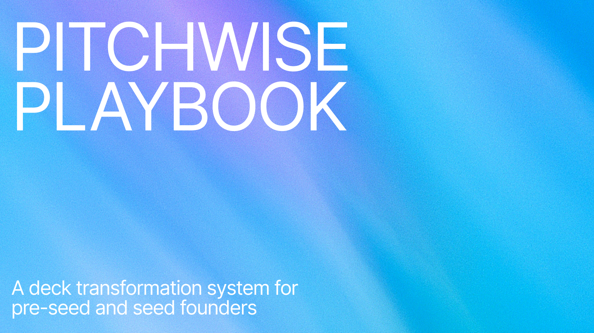
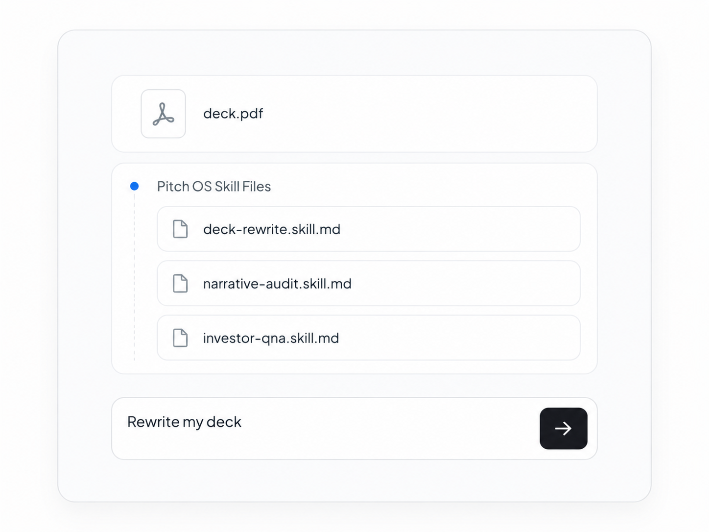
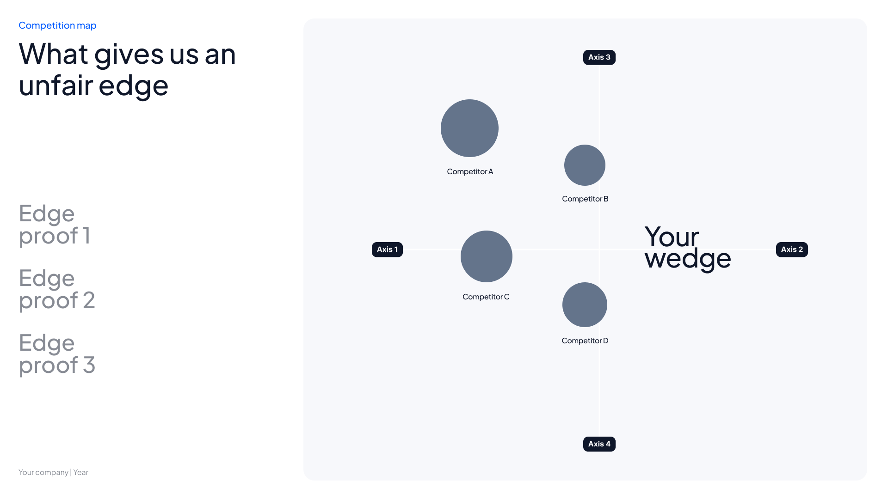

Moritz
Raised $9M
LegalTech
Global AI-native law firm with same-day turnaround, enabled by AI and elite lawyers in the loop.
PitchWise Pitch OS gives early-stage founders the playbook, AI skill files, and editable pitch template to diagnose, rewrite, pressure-test, and rebuild a sharper investor deck - before it reaches investors.
PitchWise is built from the patterns behind pitch decks tied to $1B+ in funding - reviewed through a top-tier investor lens across problem, product, market, traction, business model, and team.
Global AI-native law firm with same-day turnaround, enabled by AI and elite lawyers in the loop.

The Managed AI Delivery Platform that turns enterprise needs into production-ready AI solutions in days.

A social networking startup that delivers potential professional connections directly to users' iMessage inboxes, focusing on Gen Z and young professionals.

The first platform built specifically to simplify material management across the construction supply chain.

An AI-powered SEO agency combining AI agents and human experts to optimize online search performance for clients.

Enables large companies to build secure internal apps using AI-powered vibe coding and natural language prompts.
Investors pass when a deck is unclear, generic, unsupported, or poorly sequenced. The slide design is rarely the problem - the broken investor logic underneath it is. These are the failure points PitchWise helps you find and fix.
If you already have a rough deck and you're heading into investor outreach, demo day, an accelerator application, or fundraising conversations - PitchWise is built for you.
Pre-seed founders with a rough first deck.
Seed-stage founders with traction but an unclear narrative.
Founders preparing for investor outreach who need a sharper deck.
Accelerator applicants who need to stand out.
Technical founders whose deck is too complex or feature-heavy.
First-time fundraisers who don't know what investors expect.
PitchWise Pitch OS helps you rebuild your messy pitch deck into a clearer, sharper, investor-ready fundraising narrative using funded-deck patterns, AI skill files, and a top-tier investor review lens. Built for the moments that decide your raise.
Everything you need to diagnose, rewrite, pressure-test, and rebuild your investor deck - and prove the improvement.

Most founders don't know which slides are costing them investor attention. The Playbook gives you the investor filter: what makes a deck clear, believable, fundable, and easy to forward. Use it to stop guessing and fix the slides that actually create doubt.

This is the engine of PitchWise. Each file turns AI into a specific pitch deck expert: auditor, strategist, copywriter, skeptical investor, final editor, and build director. Instead of generic prompts, you run a step-by-step deck transformation workflow.

A blank slide deck doesn't tell you what investors need to believe. This editable PowerPoint template gives you the full fundraising spine: the order, structure, and slide jobs behind a serious pre-seed or seed deck — so your story doesn't collapse halfway through.
Founders often finish a redesign without knowing if the deck actually got better. The Scorecard lets you compare the old and rebuilt deck across clarity, proof, market logic, GTM, ask, and investor heat — before you send it and risk silence.
Move through the system step by step. Each stage sharpens the deck before it ever reaches an investor.
Your pitch deck is often the first version of your company an investor sees. If the first slide is vague, they may not keep reading. If the problem is generic, they may not believe the urgency. If traction is unlabeled, they may discount it. If the market math feels inflated, they may distrust the rest.
Most founders don't get detailed feedback. They get silence.
PitchWise helps you find and fix those problems before the deck ever leaves your hands.
PitchWise Pitch OS includes the playbook, six AI skill files, editable 18-slide PowerPoint template, and before/after scorecard — everything you need to diagnose, rewrite, pressure-test, and rebuild your investor deck.
Launch pricing is available now. Regular price will be $99 after the launch period.
Upload your current pitch deck and get a focused review of where it's losing investor attention. We'll review the biggest gaps in your narrative, structure, clarity, and investor-readiness — so you know what to fix before investors see it.
PitchWise helps you make your startup look as sharp as it actually is — and prove it slide by slide.
Get Pitch OS for $29Get the playbook, six AI skill files, 18-slide template, and scorecard - or start with a free audit to see where your deck stands. Regular price $99. Launch offer $29.